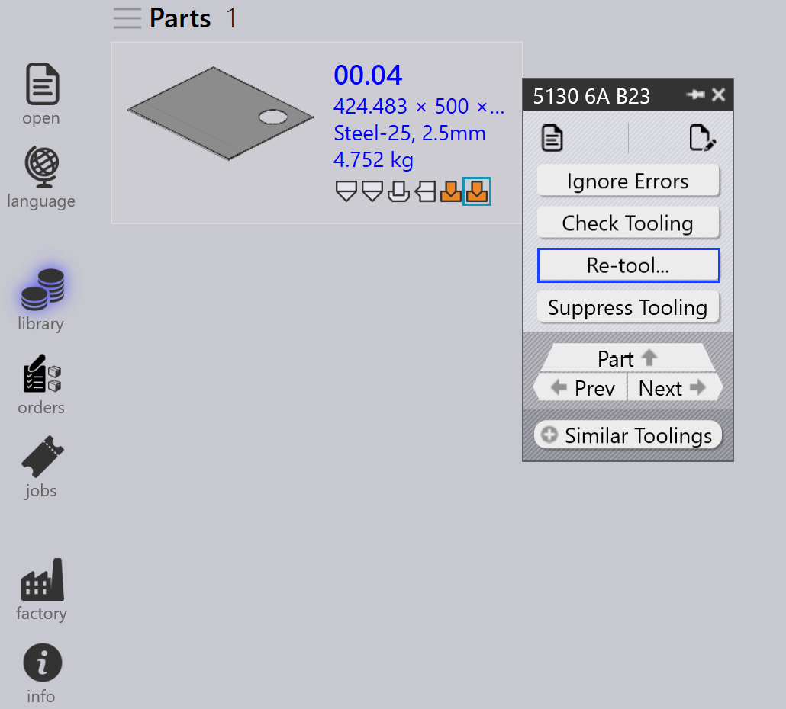

Tooling-Bedienfeld
In diesem Abschnitt werden Tooling-bezogene Aktionen erläutert, wie Export outputs, Check Tooling, Suppress Tooling, Set as Base-Flat…, Copy Tooling und weitere Optionen zur Verwaltung von Tooling-Instanzen.

|
|


Export Outputs
Diese Option exportiert die Teileausgabe an das in den Factory Settings konfigurierte Ziel. (Siehe Biegeeinstellungen und Schneideinstellungen)

Es werden nur die Toolings exportiert, die mit der ausgewählten Tooling-Operation verknüpft sind, nicht das gesamte Teil.
| Die exportierten Dateien hängen vom Operationstyp ab. Bei Biege- und Falzoperationen werden NC-Dateien und Berichte erzeugt. Bei Schneid- und Stanzoperationen werden nur die Teildateien exportiert. |
Check Tooling
-
Wenn sich die CAM-Einstellungen geändert haben oder ein Biegewerkzeug fehlt, müssen Sie das Teil nicht erneut bearbeiten (Re-tool).
-
Verwenden Sie stattdessen Check Tooling, um das vorhandene Tooling ohne Änderungen zu validieren.
-
Wenn die Validierung fehlschlägt, wird der Tooling-Status dieser Instanz aktualisiert und die zugehörigen Ausgabedateien werden entfernt.
-
Check Tooling erkennt auch Teile, bei denen Fehler zuvor manuell mit Ignore Errors überschrieben wurden, und aktualisiert deren Status bei Bedarf auf Fehler.

Copy tooling
Mit Copy Tooling können Sie Biege-Tooling schnell von einer Lösung auf andere übertragen und so Zeit und Aufwand sparen.
Dabei werden die Stempel-, Sequenz- und Hinteranschlag-Einrichtung von einem ausgewählten Referenz-Tooling (Lösung) kopiert und versucht, dieselben Einstellungen auf alle anderen Lösungen anzuwenden.
-
Wenn die kopierte Einrichtung für eine Zielmaschine durchführbar ist, wird sie gespeichert und verwendet.
-
Wenn die Einrichtung nicht durchführbar ist, bleibt das ursprüngliche Tooling für diese Maschine unverändert.
Zum Beispiel können Sie unterschiedliche Toolings für verschiedene Maschinen haben:
-
Hier verwendet Maschine 5230SX 6A einen Gooseneck-Stempel, Maschine 5085X 6A B23 verwendet einen Pointed-Stempel.

Wenn Sie Copy Tooling… auf Maschine 5230SX 6A verwenden, wird versucht, die Gooseneck-Einrichtung auf alle anderen Maschinen zu kopieren.

Dieselben Stempel-, Sequenz- und Hinteranschlag-Einstellungen werden angewendet, wo immer dies möglich ist. Wenn die kopierte Einrichtung nicht verwendet werden kann, bleibt das ursprüngliche Tooling unverändert.

Nach der Anwendung von Copy Tooling wurde die Gooseneck-Einrichtung erfolgreich auf alle anderen Maschinen übertragen, bei denen dies durchführbar ist.
Set as Base-Flat…
Die Funktion Set as Base-Flat… legt fest, welches Biege- oder Falz-Tooling als Referenz-Abwicklungsgröße für die Erstellung von Schneidlösungen verwendet wird. Wenn ein Tooling als Base-Flat markiert ist, aktualisiert TruSmartCAM die Abwicklungsgröße des Teils basierend auf dieser Maschine und generiert die Schneidlösungen entsprechend neu. Base-Flat-Toolings werden in der Benutzeroberfläche mit einem blauen Rahmen angezeigt.
Verschiedene Biegemaschinen können für dasselbe Teil leichte Abweichungen in der Abwicklungsgröße erzeugen. Wenn Sie ein Tooling als Base-Flat festlegen, verwendet TruSmartCAM die Abwicklungsgröße dieser Maschine als Hauptreferenz und berechnet die Schneidlösungen automatisch neu.
Hier sehen Sie unterschiedliche Abwicklungsgrößen für dasselbe Teil auf verschiedenen Maschinen:

In diesem Beispiel ist das Tooling 5130X 6A B23 als Base-Flat festgelegt, und die aktualisierte Abwicklungsgröße wird in den Teileigenschaften angewendet:

Automatische Base-Flat-Auswahl
Wenn die Fabrikeinstellung Apply flat correction during bending aktiviert ist:

-
TruSmartCAM legt beim Teileimport automatisch das Biege-Tooling (das die maximale Biegelängentabelle enthält) als Base-Flat fest.
-
Wenn das ausgewählte Biege-Tooling einen Fehler aufweist oder nicht durchführbar ist, wechselt TruSmartCAM intelligent und legt ein anderes gültiges Biege-Tooling als Base-Flat fest. Dies stellt sicher, dass die Abwicklungsgrößenreferenz und die Schneidlösungen ohne manuellen Eingriff stets konsistent und gültig bleiben.
Erweiterte Base-Flat-Verwaltung
TruSmartCAM bietet Base-Flat-Optionen im Dialog Save to Praxis beim Speichern von Biege- oder Falz-Tooling-Bearbeitungen. Diese Optionen erscheinen nur für Toolings im Status OK und stellen sicher, dass Abwicklungsgröße und Schneidlösungen korrekt bleiben.
Set as Base-Flat and calculate cutting solution
Diese Option wird verwendet, um ein Tooling erstmals als Base-Flat zu markieren und automatisch die entsprechende Schneidlösung zu generieren.
Erscheint wenn:
-
Das Tooling derzeit nicht als Base-Flat markiert ist.
-
Der Benutzer das Tooling zur Bearbeitung ausgecheckt hat und die Änderungen speichert.

Um diese Option zu verwenden, checken Sie das Biege- oder Falz-Tooling aus und nehmen Sie die erforderlichen Änderungen vor, z. B. Änderungen an Biegeparametern oder der Abwicklungsgröße. Drücken Sie Ctrl+S, um die Änderungen zu speichern. Wählen Sie im Dialog Save to Praxis die Option Set as Base-Flat and calculate cutting solution und klicken Sie auf OK. TruSmartCAM legt das Tooling als Base-Flat fest und generiert die Schneidlösung mit der aktualisierten Abwicklungsgröße.
Update the base-flat and re-calculate cutting solution
Diese Option wird verwendet, wenn das Tooling bereits als Base-Flat markiert ist und bearbeitet wurde, sodass die Abwicklungsgröße und die Schneidlösungen neu generiert werden müssen.
Erscheint wenn:
-
Das Tooling bereits als Base-Flat markiert ist.
-
Der Benutzer es ausgecheckt, bearbeitet hat und die Änderungen speichert.

Aktualisieren Sie beim Bearbeiten des vorhandenen Base-Flat-Toolings die Biegeparameter oder die Abwicklungsgeometrie nach Bedarf. Wählen Sie im Dialog Save to Praxis die Option Update the base-flat and re-calculate cutting solution. TruSmartCAM aktualisiert dann das Base-Flat-Tooling und generiert alle zugehörigen Schneidlösungen neu, um die neuesten Änderungen widerzuspiegeln.
|
Es kann jeweils nur ein Biege-Tooling als Base-Flat festgelegt werden. Wenn das Base-Flat geändert wird, werden vorhandene Schneidlösungen automatisch neu verarbeitet. Diese Funktion ist sowohl für Biege- als auch für Falz-Toolings in TruSmartCAM verfügbar. |
Re-tool
Diese Option verarbeitet das ausgewählte Tooling für das Teil erneut.
Klicken Sie mit der rechten Maustaste auf das gewünschte Tooling im Tooling-Bedienfeld und klicken Sie auf Re-tool…

Vor dem Fortfahren wird ein Bestätigungsdialog angezeigt.

Klicken Sie auf Yes, um mit dem Re-Tooling fortzufahren, oder auf No, um den Vorgang abzubrechen.
Nur das ausgewählte Tooling wird erneut bearbeitet. Andere mit dem Teil verknüpfte Toolings sind nicht betroffen. Die vorhandenen Ausgaben des ausgewählten Toolings werden entfernt und während des Re-Tooling-Prozesses neu generiert.
Verwenden Sie diese Option, wenn Tooling-Daten veraltet oder fehlerhaft sind oder wenn Änderungen an Maschinen- oder Tooling-Konfigurationen vorgenommen wurden.
Ignore errors
-
Wenn eine bearbeitete Instanz eine Warnung anzeigt und Sie dennoch fortfahren möchten, können Sie die Warnung durch Klicken auf Ignore errors überschreiben.

-
Dies ermöglicht es dem System, Ausgabedateien für diese Instanz zu exportieren, auch wenn Tooling-Probleme vorlagen.
| Verwenden Sie Ignore Errors nur, wenn Sie sicher sind, dass die Warnung gefahrlos ignoriert werden kann. Das Überschreiben tatsächlicher Fehler kann zu Maschinenschäden oder Sicherheitsrisiken führen. |
Tooling unterdrücken/Unterdrückung aufheben
-
Wenn eine Maschine inaktiv ist oder Sie nicht möchten, dass ein bestimmtes Teil von einer bestimmten Maschine bearbeitet wird, verwenden Sie Suppress Tooling, um dieses Teil vom Nesting auf dieser Maschine auszuschließen.

-
Nach dem Unterdrücken zeigt das Überfahren der bearbeiteten Instanz mit der Maus eine Meldung wie: „Tooling suppressed by <Benutzername> on <Datum Uhrzeit>".
-
Das Unterdrücken des Toolings entfernt die Ausgabedatei für diese Maschine und dieses Teil.
-
Verwenden Sie Unsuppress tooling, um den Tooling-Status für das Teil auf dieser Maschine wiederherzustellen.

-
Bei Aufhebung der Unterdrückung wird die entsprechende Ausgabedatei erneut generiert.